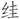

八
话说回来，并非只有中国才讲“忠”。其他文化和文明，也主张效忠国家、奉事以忠。可见“忠”在有些方面，也反映了人类“普世价值”。本文讨论的，是一种比较特殊的“忠”，产于中国式君权崇拜的观念及历史。这种“忠”没有“普世性”，只有特殊性和极端性，以致经常闪现不可理喻、出人意表的惊人之见。
比如，通常接受“伪职”、切实为敌工作的人，才算投降者，而在明人眼里，这远远不够。从当时江南各地人士“讨降”檄文中我们发现，那些在京遭受拘禁与拷打的官员，也是指责和清算的对象，也列入“从贼”范围。杨士聪《甲申核真略》突出谈到了这一点：
且辱与荣，对者也。冠裳车服，贼之所谓荣者，吾既以为辱；则桎梏桁杨，贼之所谓辱者，吾将以为荣。荣辱有何定哉！自南中欲锢北来诸臣，遂倡为刑辱之说，计将一网打尽。[100]
“刑辱之说”的意思是，那些被闯军抓起来并且用刑的明朝官员，纵使并未加入大顺政权，也个个算有罪之身。这道理，无论怎么看，都古怪极了。遭此大难，悲惨之至，不表同情与慰问已很过分，怎么还要问罪呢？大家不知，那是根据两个理由。一是“刑不上大夫”，身为朝廷命官而被庶民（农民军）拷打，看上去是你受皮肉之苦，折辱的却是朝廷体统，故而有罪。二是“主忧臣辱，主辱臣死”，既然君上已然自尽，臣子就再无活下去的道理，何况这种“偷生”还白白地送给“贼寇”凌辱自己的机会。归根到底，崇祯死后，诸臣别说屈膝投降，活着就算有罪，在江南声讨过程中，有位诸生就怒斥道：“主辱臣死，岂主死尚可臣生！”[101]
所以，南都有关“附逆”之议，普遍主张除明确投降的外，要增加“徘徊于顺逆之间”[102]这种情况。有人于奏疏中，提至如下高度：“变故危亡之际，正臣子致身见节之时。亘古迄今，大义无所逃于天地间也。”[103]这就是“死忠”的奉君之道。从“死忠”角度看，逃生与投降半斤八两，于“大义”都不能容。
好在并非所有人都是这样高调。史可法就能够在一片狂热中，主张宽容。他上了一道《论从逆南还疏》，对那些漂亮辞藻加以驳斥：
先帝惨殉社稷，凡属臣子皆有罪，在北始应从死，岂在南独非人臣耶？即臣可法谬典南枢，臣士英叨任凤督，未闻悉东南甲，疾趋北援；镇臣高杰、刘泽清，以兵力不支，折而南走，是首应重论者臣等罪也。乃以圣明继统，不惟斧锧未加，抑且恩荣叠被，独于在北诸臣，毛举而概绳之，岂散秩闲曹，责反重于南枢凤督哉。宜将从逆诸臣择罪状显著者，重处示儆。若伪命未污，身被刑拷者，可置勿问……总之应罪者罪，无为报怨之借题；应宽者宽，无令人心之解体。使天下晓然知君臣大义，不但在北者宜死，即在南者亦宜死，而圣明宥过；不但在南者姑宽，即在北者亦姑宽，必有全身忍诟之人，为雪耻除凶之计，宽以死而报以死，或亦情理之所必至也。[104]
看来古代也好，今天也罢，凡脚踏实地、勇于担当者，一般不在道德上唱高调，用心比较平和；倒是一些沽名钓誉之徒，往往激昂。
研究降附者的资料，发现一种有趣现象，即亲属中倘若一个在南、一个在北，经甲申之变便如隔天渊，在南者依然故我，在北者却一律成为反面人物。例如史可法与史可程，左懋第与左懋泰，周钟与周镳，顾杲与顾棻。史可程投降后仍为庶吉士，闯军曾命他写信招降史可法，只因大顺崩溃过快，其事“不果”。[105]左懋泰任“伪兵政府侍郎，镇守山海关”[106]。周钟事详前。顾棻被委任为“伪四川成都府同知”。[107]他们都是亲兄弟和堂兄弟，或一母同胞，或同受家训，道德品性即有所差，应不至霄壤之别。然而，在北者竟无一例外全部降附而名节不保。如谓巧合，岂不太巧？如系偶然，又何至于这么整齐分明？道德、名节解释得了吗？
《丹午笔记》载有顾杲为哥哥投降事，而写给哥哥的一封信。头一句就提到，早先曾收到顾棻于城危时寄回的家书，里面“以死自誓”。顾杲说当时睹此语，“弟既痛楚，旋复痛快。盖悲兄之死，而幸国家有忠臣、先人有肖子。”然而，“不图今日乃至于斯也！”他批评哥哥：
生死之际，虽难顾天地之惨何似，况骂贼求死，不过一启口之易耳。城破苟免，一误也。被执苟免，二误也。入京而又苟免，三误也……至于名伪籍，其玷已甚，不可复云误矣。[108]
所论头头是道：先有“三误”，及拜“伪职”，则“其玷已甚”，不再是“误”了。这样一种经过，适用于降附者中的大多数，除开少数削尖脑袋的干进之徒。
其实，很多人在投降前，最初都和顾棻一样有赴死之志，或表现得并不怕死。例如明末百科全书式通才、“四公子”之一的方以智，“闻变，走出……潜走禄米仓后夹衖，见草房侧有大井，意欲下投，适担水者数人至，不果”，第二天一大早，就被四处找寻的家人找到，逼着他去闯军处报到（“家人惧祸，已代为报名矣”），他就这样稀里糊涂归附了闯军。[109]再如庶吉士张家玉，“贼怒，缚柱上欲刳之，颜色不变，异而释之。愈欲其降，不可。遣人往拘其父母，乃降。”[110]他是因孝而降，没有满足朱熹的愿望，将与父母的“天理自然”给忠君的“义务”让道，但我认为他是一个真正能担当的人。几年后，他在东莞抗清，“矢尽炮裂，欲战无具”，“自投野塘死”。[111]
归结起来，绝大多数投降者或未能一死了之者，无非只因心中“私”字一闪念。我们现在管这种情形叫“人性”。比如眷恋生命，比如懦弱，比如犹疑，比如不忍连累家人……哪怕像龚鼎孳那样，“我原要死，小妾不肯。”这些，本来都属于正常人性，不高大，但也谈不上可耻。照我们今天的观点，每个人作为生命个体，允许而且应该拥有一点自我的空间，在重大的关头可以替自己做些考虑。在美国，哪怕是干了坏事的犯罪嫌疑人，法律也承认他有权首先保护自我而“保持沉默”。而我们的“传统道德”，不会给个人这种空间。因为我们要求的“忠”，基于人身依附及占有，是个人无条件、无保留地对“所有者”（君主、国家等）的服从和献出。糟糕的是，这种要求还完全以“正义”面目出现。